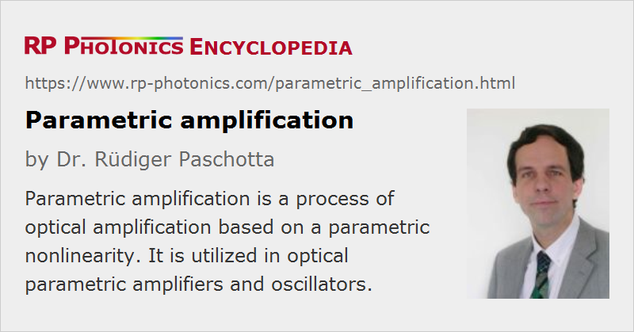

Parametric Amplification
Definition: a process of optical amplification based on a parametric nonlinearity
German: parametrische Verstärkung
How to cite the article; suggest additional literature
Author: Dr. Rüdiger Paschotta
Parametric amplification is a phenomenon where a signal can be amplified using a parametric nonlinearity and a pump wave. This articles focuses on optical amplification, even though there are also electronic parametric amplifiers, used e.g. for microwaves. For optical parametric amplifiers, either the χ(2) nonlinearity of certain nonlinear crystal materials or the χ(3) nonlinearity e.g. of an optical fiber [7] can be utilized.
This article discusses the physical mechanism of parametric amplification, which is based on some optical nonlinearity. It is different from laser amplification via stimulated emission by excited atoms or ions; parametric amplification does not involve the excitation of media to higher-lying energy levels (even though some frequently used explanations involve some virtual excited states). Note also that it is important to distinguish between degenerate and nondegenerate parametric amplification, because these lead to very different features.
Nondegenerate Parametric Amplification
Here, we consider parametric amplification based on a χ(2) nonlinearity in a nonlinear crystal material such as LiNbO3 or lithium triborate (LBO).
In the nondegenerate case, there is an interaction between three distinct light waves, the angular frequencies of which are ω1, ω2, and ω3 (with the indices in the order of the frequency values):
- The pump wave has the frequency ω3.
- The signal wave has the frequency ω2.
- A so-called idler wave with the frequency ω1 is generated in the interaction.
For reasons of energy conservation, the relation ω3 = ω1 + ω2 must hold. The idler frequency ω1 is often below the signal frequency ω2, but it can also be higher than that; in any case, both signal and idler frequency are below the pump frequency.
Essentially, the amplification process implies that some of the pump photons are converted to signal and idler photons. More precisely, for each disappearing pump photon, one signal photon and one idler photon is generated. Although the idler photons leaving the nonlinear crystal are often not used, there are essential in the amplification process: for a material with strong absorption of the idler wave, the amplifier performance can be strongly degraded.
The local growth rate for the signal amplitude is proportional not only to the pump amplitude, but also to the already present signal amplitude. Therefore, the process can be interpreted as an amplification process – unlike the process of frequency doubling, for example.
For a simple case with plane waves or with weakly focused collinear Gaussian beams, the nonlinear interaction of the waves with complex amplitudes A1 to A3 can be described with the equations
where
is the phase mismatch, calculated from the wavenumbers, z is the coordinate of the propagation direction, and κ is a coupling constant which is proportional to the effective nonlinear coefficient of the material. A more symmetrical set of equations is sometimes used, which can be obtained from the equations above by replacing the amplitude A3 with i A3.
The simplest situation is that with a zero phase mismatch. When there is no idler input (A1 = 0 at the beginning of the crystal), in the first order there is no signal amplification nor any pump depletion, but a buildup of an idler wave. If the initial A3 and A2 are real, a real amplitude of the idler will be built up. (This process may be called difference frequency generation.) In the following, this leads to a growth of A2, i.e., to signal amplification, and later to the depletion of the pump wave.
It is instructive to consider that the phase of the initial signal is now rotated by e.g. 30°. This will lead to a rotation of the idler phase by −30°. Consequently, the field contributions added to the signal are also rotated by +30°, so that the signal is amplified as before. This shows that the amplification is phase insensitive (i.e. independent of the signal phase) in this nondegenerate case (with a separate signal and idler).
In another case, the pump phase is rotated by 30°. This will also rotate the idler by 30°. Both phase changes cancel in the contribution added to the signal, so the signal is again amplified, and only the idler phase is changed.
When there is a phase mismatch (i.e. a nonzero Δk), the relative phases of the waves will change during propagation, so that after some distance the power in signal and idler can be converted back towards the pump. Therefore, phase matching, which can be achieved only in a limited frequency range, is important for efficient amplification. Under certain special conditions, a very large phase-matching bandwidth may be achieved.
The equations also show that the signal amplification is reduced in a medium with strong absorption for the idler wave, which keeps the idler amplitude small. Therefore, the transparency range of the nonlinear crystal has to be large enough to keep the idler wave in the low-loss window, even if one is not interested in the idler wave itself. However, some level of idler absorption may even be beneficial in certain cases [9].
The equations used are based on classical physics. In a quantum-mechanical picture, there are processes where pump photons are converted into signal–idler photon pairs. These are strongly correlated, leading to nonclassical statistics.
Degenerate Parametric Amplification
In the rarely used degenerate case, signal and idler waves are identical not only in frequency but also in polarization, i.e., they are indistinguishable. There is therefore only a signal amplitude A1 and a pump amplitude A2, and no idler. The signal wavelength is then exactly twice the pump wavelength. The interaction is described with the equations
with
Here, the amplification is phase sensitive. For example, signal amplification occurs (for zero phase mismatch) if the signal and pump amplitudes are real and positive, or there is signal deamplification when the sign of the pump amplitude is changed. The direction of energy transfer is governed by the complex phase of the term A12 A2*.
Phase-sensitive amplification provides a mechanism for producing so-called squeezed states of light, and also in principle it allows one to avoid excess amplifier noise. However, the need to maintain a fixed phase relationship between pump and signal makes this kind of optical amplification too inconvenient e.g. for use in optical fiber communications.
Parametric Amplification in Fibers
Due to the centrosymmetric nature of the material, glass fibers do not exhibit a χ(2) nonlinearity (unless under certain circumstances, for example when fibers are “poled” with a strong electric field). However, parametric amplification can also occur as a result of the χ(3) nonlinearity. In that case, four different frequencies can be involved: two pump frequencies, a signal frequency, and an idler frequency. A frequent case is that of partial degeneracy, where one has only a single pump wave.
The interaction is somewhat complicated because the optical phases of signal and idler are influenced both via cross-phase modulation (XPM) and the chromatic dispersion of the fiber. (For strong signals, self-phase modulation occurs in addition.) Parametric amplification is obtained only within some wavelength range around the pump wavelength. That range can be fairly wide when the chromatic dispersion is weak, and its width depends on the pump power.
Figure 1 shows the gain spectra for an example case. The highest gain occurs for a signal wavelength where phase matching is obtained by mutual cancellation of XPM and dispersion effects. This is possible only for anomalous dispersion.
Parametric gain is mostly relevant in cases where short pulses propagate in a fiber. Numerical pulse propagation modeling can simulate such situations, where a variety of effects can play a role. Examples are the partial temporal overlap of pulses due to group velocity mismatch and soliton effects. The interactions are particularly complicated in multimode fibers, because the phase matching is different for different combinations of propagation modes.
Questions and Comments from Users
Here you can submit questions and comments. As far as they get accepted by the author, they will appear above this paragraph together with the author’s answer. The author will decide on acceptance based on certain criteria. Essentially, the issue must be of sufficiently broad interest.
Please do not enter personal data here; we would otherwise delete it soon. (See also our privacy declaration.) If you wish to receive personal feedback or consultancy from the author, please contact him e.g. via e-mail.
By submitting the information, you give your consent to the potential publication of your inputs on our website according to our rules. (If you later retract your consent, we will delete those inputs.) As your inputs are first reviewed by the author, they may be published with some delay.
Bibliography
| [1] | N. M. Kroll, “Parametric amplification in spatially extended media and application to the design of tuneable oscillators at optical frequencies”, Phys. Rev. 127 (4), 1207 (1962), doi:10.1103/PhysRev.127.1207 |
| [2] | R. H. Kingston, “Parametric amplification and oscillation at optical frequencies”, Proc. IRE 50, 472 (1962) |
| [3] | S. A. Akhmanov and R. V. Khokhlov, “Concerning one possibility of amplification of light waves”, Sov. Phys. JETP 16, 252 (1963) |
| [4] | S. A. Akhmanov et al., “Observation of parametric amplification in the optical range”, JETP Lett. 2, 191 (1965) |
| [5] | B. R. Mollow and R. J. Glauber, “Quantum theory of parametric amplification. I”, Phys. Rev. 160 (5), 1076 (1967), doi:10.1103/PhysRev.160.1076 |
| [6] | R. A. Baumgartner and R. L. Byer, “Optical parametric amplification”, IEEE J. Quantum Electron. 15 (6), 432 (1979), doi:10.1109/JQE.1979.1070043 |
| [7] | R. H. Stolen and J. E. Bjorkholm, “Parametric amplification and frequency conversion in optical fibers”, IEEE J. Quantum Electron. 18 (7), 1062 (1982), doi:10.1109/JQE.1982.1071660 |
| [8] | G. Arisholm, T. Südmeyer, and R. Paschotta, “Limits to the power scalability of high-gain optical parametric oscillators and amplifiers”, J. Opt. Soc. Am. B 21 (3), 578 (2004), doi:10.1364/JOSAB.21.000578 |
| [9] | G. Rustad et al., “Effect of idler absorption in pulsed optical parametric oscillators”, Opt. Express 19 (3), 2815 (2011), doi:10.1364/OE.19.002815 |
| [10] | R. L. Sutherland, Handbook of Nonlinear Optics, 2nd edn., Marcel Dekker, New York (2003) |
| [11] | R. W. Boyd, Nonlinear Optics, Academic Press, 2nd edn., CRC Press, Boca Raton, FL (2003) |
| [12] | G. P. Agrawal, Nonlinear Fiber Optics, 4th edn., Academic Press, New York (2007) |
See also: optical parametric amplifiers, optical parametric chirped-pulse amplification, optical parametric oscillators, optical parametric generators, optical amplifiers, amplifier noise, nonlinearities, squeezed states of light, The Photonics Spotlight 2007-12-11
and other articles in the category nonlinear optics
|  |
If you like this page, please share the link with your friends and colleagues, e.g. via social media:
These sharing buttons are implemented in a privacy-friendly way!